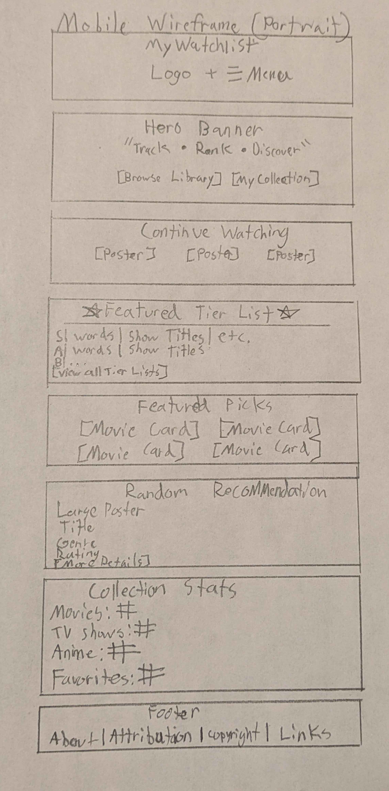
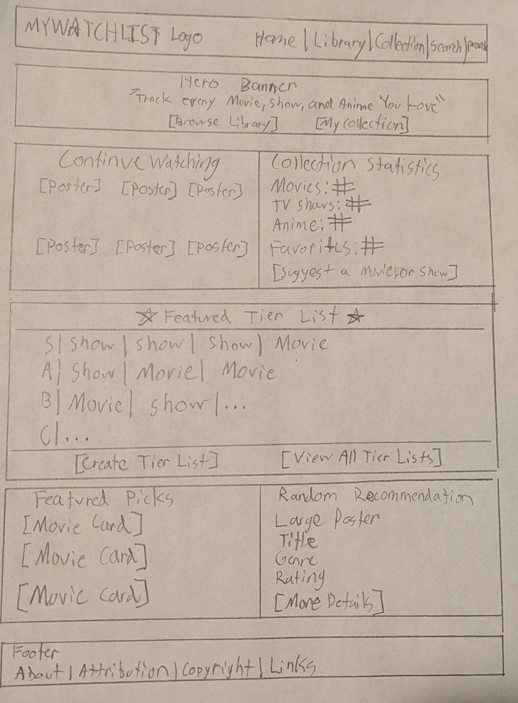

Site Name
MyWatchlist
MyWatchlist is a personal entertainment tracking website that allows users to browse, organize, rank, and save movies, television shows, anime, and other media. The name was chosen because it immediately communicates the primary purpose of the website—creating and managing a personal watch list.
Suggested domain: mywatchlist.com
Site Purpose
MyWatchlist provides a centralized location where users can:
- Browse a growing media library.
- View detailed information about every title.
- Search and filter movies and shows.
- Save favorites.
- Track what they have watched.
- Create unlimited custom tier lists.
- Receive featured recommendations.
- Store their personal collection using Local Storage.
The website demonstrates modern JavaScript techniques including fetching JSON data, asynchronous programming, DOM manipulation, modal dialogs, array methods, ES Modules, and persistent client-side storage.
Target Audience Scenarios
- How can I keep track of every anime I've finished watching?
- What Studio Ghibli movies haven't I watched yet?
- Can I rank every Marvel movie from best to worst?
- Which fantasy anime have I rated the highest?
- Where can I quickly find details about a movie before adding it to my watchlist?
Dynamic Tier List System
One of the primary features of MyWatchlist is its Dynamic Tier List System. Unlike traditional tier lists, users first create a tier list by selecting a media type and filter. The website automatically generates the available titles using the JSON media database.
Example Workflow
- Create a new Tier List.
- Name the Tier List.
- Select a Media Type.
- Select a Filter Type.
- Select the desired filter value.
- The website loads matching titles automatically.
- Drag titles into S, A, B, C, D or F tiers.
- Save the finished tier list.
Supported Filters
- Genre
- Studio
- Director
- Franchise
- Release Year
- Rating
- Movie
- TV Series
- Anime
Example Tier Lists
- Fantasy Anime
- Romance Anime
- Marvel Movies
- Studio Ghibli Films
- Pixar Movies
- Christopher Nolan Movies
- Crime TV Shows
- Favorite Sitcoms
Users may create an unlimited number of tier lists.
Planned Pages
Home
- Hero Banner
- Featured Picks
- Continue Watching
- Collection Statistics
- Featured Tier List
- Random Recommendation
Library
- Media Browser
- Search
- Genre Filters
- Sorting
- Modal Details
- Favorites
- Watch Status
- Add to Tier List
Collection
- Saved Favorites
- Watchlist
- Completed Titles
- Custom Tier Lists
- Create Tier List
- Edit Tier List
- Delete Tier List
- Statistics
Color Scheme
MyWatchlist uses a modern dark theme inspired by streaming services and developer dashboards. Blue is used for primary actions while purple provides accent colors for highlights and featured content.
Background
#0F172A
Site background and page body.
Surface
#1E293B
Cards, panels, sections, and navigation.
Primary Blue
#3B82F6
Buttons, links, headings, and interactive elements.
Accent Purple
#8B5CF6
Featured content, highlights, and tier list accents.
Wireframes
Final hand-drawn wireframes of the main site page.
Mobile Layout

Desktop Layout
